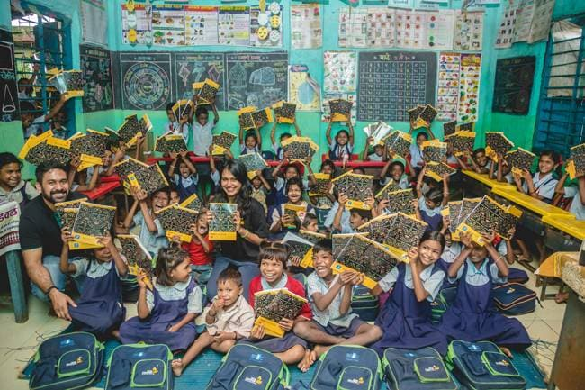

WHY US
OUR APPROACH
Our approach to creating a wave of change in the lives of children is through the successful implementation of Child Rights Programming.
Committed to our vision and working towards our mission, we ceaselessly work towards a better life for every child through all our undertakings. Take a look at how we differ in our approach to making this world a better place for underprivileged children.
INNOVATION
The right approach through innovation ensures that eminent services are available to all children without any discrimination. Any issue that causes a child rights violation is an indication of deep-seated problems within the foundations and fabric of our society. We, at Save the Children, identify these evils and work with children, families, and communities to demand answerability from the government and robust solutions to alleviate the impact of these problems that challenge the survival of underprivileged children.
Save the Children was founded on the belief that every child has the potential to change the world; this is exactly what we aim to do through the Innovation approach by enabling programmes that ensure and sustain children’s overall growth and development.
IMPACT
To guarantee the wide-scale success of any programme, collecting and analysing data becomes a poignant virtue. Introducing interventions and implementing modifications within Save the Children’s programmes have led to a larger success ratio through the Evidence & Use approach.
Save the Children was founded on the belief that every child has the potential to change the world; this is exactly what we aim to do through the Evidence & Use approach by understanding the impact of a programme and altering to ensure and sustain children’s overall growth and development.
QUALITY
Save the Children India ensures quality intervention in the lives and communities of children. Our key priority is towards increasing quality, and we ensure not only are our programmes monitored or evaluated but our internal functions also adhere to international standards. We actively seek varied opinions and document all our learnings to evolve our programs. This informs our decision-making, and we share learnings through communities of practice and adopt an action plan tracker.
